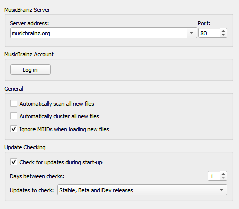
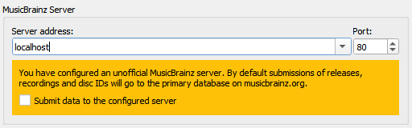

General Options¶
{kind=link}
Server address
The domain name for the MusicBrainz database server used by Picard to get details of your music. Default value: musicbrainz.org (for the main MusicBrainz server).
In addition to the standard MusicBrainz servers provided in the drop down list, you can manually enter an alternate address, such as “localhost” if you are running a local copy of the server. When an alternate server host name is entered, a warning will be displayed and you will be asked to confirm that you want to submit all data to this alternate server.

{kind=link}
Port
The port number for the server. Default value: 443 (for the main MusicBrainz server).
Username
Your MusicBrainz website username, used to submit acoustic fingerprints, retrieve and save items to your collections, and retrieve personal folksonomy tags.
Password
Your MusicBrainz website password.
Automatically scan all new files
Check this box if you want Picard to scan each music file you add and look for an AcoustID fingerprint. This takes time, but may be helpful for you and MusicBrainz. Leave it unchecked if you don’t want Picard to do this scan automatically. In any case, you can direct Picard to scan a particular music file at any time using . See also Scan Files and Understanding Acoustic Fingerprinting and AcoustIDs.
Automatically cluster all new files
Check this box if you want Picard to automatically group all loaded files into album clusters. Leave it unchecked if you don’t want Picard to do this automatically. In any case, you can direct Picard to cluster files any time using . See also Lookup Files.
Note
You can either enable “Automatically scan all new files” or “Automatically cluster all new files”, but not both.
Ignore MBIDs when loading new files
If you disable this option Picard will not use MusicBrainz identifiers (MBIDs) stored in the files to automatically load the corresponding MusicBrainz release and match the loaded file to the correct track. This is useful when re-processing files that have been previously tagged with incorrect information.
Check for updates during start-up
This option determines whether or not Picard will automatically check for program updates during startup. In any case, you can have Picard check for program updates at any time using .
Days between checks
This option allows you to limit the automatic update checking by selecting the interval, in days, between checks. Set this to 1 if you want to check daily, 7 for weekly checks, and so on. Note that this only applies if the “Check for updates during start-up” option is enabled.
Updates to check
This option allows you to select which levels of update to check. Your options are:
Stable releases only
Stable and Beta releases
Stable, Beta and Dev releases
For example, if you subscribe to “Stable releases only” you will not be notified if a new Beta or Dev release is issued.
Note
The update checking related settings and command may not be available when Picard is distributed as a package. In that case, the user should check with the maintainer of the package to determine when an update is available.